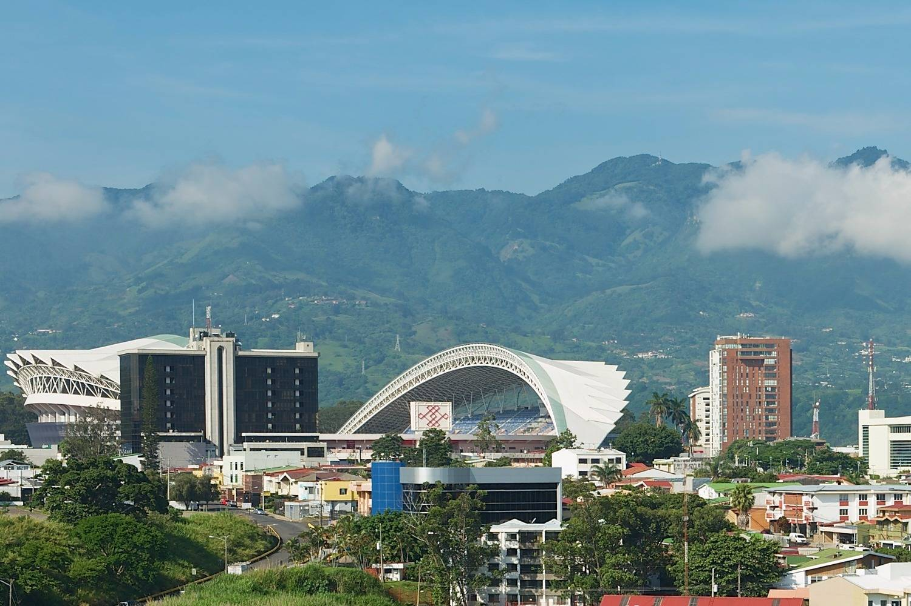

Costa Rica Pura Vida!


San José de Costa Rica

San José es la capital de la República de Costa Rica y la cabecera de la provincia del mismo nombre. Ubicada en el centro del país, específicamente sobre la meseta intervolcánica llamada Valle Central, y contenida en su totalidad por el cantón homónimo. Su zona metropolitana con aproximadamete 3 000 000 de habitantes convierte a San José en el centro político, económico y social más importante del territorio costarricense, así como el nudo principal para el transporte y telecomunicaciones. Culturalmente puede considerarse casi en su totalidad con influencia europea que le confirió la inmigración española e italiana a partir de su colonización, influencia también importada de Francia y Bélgica, donde generalmente estudiaba la clase privilegiada del país en el siglo XIX y a principios del siglo XX. Esto se puede ver en la distribución de la ciudad que creció alrededor de la actual catedral y más tarde en la arquitectura de la misma. Al igual que los cantones decanos del país, el cantón de San José fue fundado el 7 de diciembre de 1848, sin embargo la población surgió alrededor de 1737. A través de su historia, como una ciudad de importancia estratégica, ha sido capital de la República en tres ocasiones y, en la actualidad, su centro es un área eminentemente comercial que congrega diariamente a más de 1 millón de personas. El Área Metropolitana de San José se compone de los demás distritos satélite josefinos y otros 13 cantones de la provincia,1 formando junto con los conurbanos de Cartago, Heredia y Alajuela al Gran Área Metropolitana.2 San José destaca entre las ciudades latinoamericanas por su alta calidad de vida,34 seguridad, globalización, desempeño ambiental,5 servicios públicos y reconocidas instituciones (hospitales, museos, universidades...), siendo la sexta capital turísticamente más atractiva de la región, líder en América Central.6 Esto ha propiciado que multitud de organismos internacionales y de cooperación continental establezcan sus sedes o representaciones regionales en la ciudad,nota 2 lo que combinado con una potente actividad económica emergente (entre las mayores del mundo),12 importante estabilidad y marcada influencia cultural, financiera y turística; le permitan considerarse una ciudad global.
Perfil del Autor
Max Rodriguez, San José Costa Rica. Nacimiento 1983, vive en San José desde entonces, estudiante de Nexxt U en el desarollo HTML.